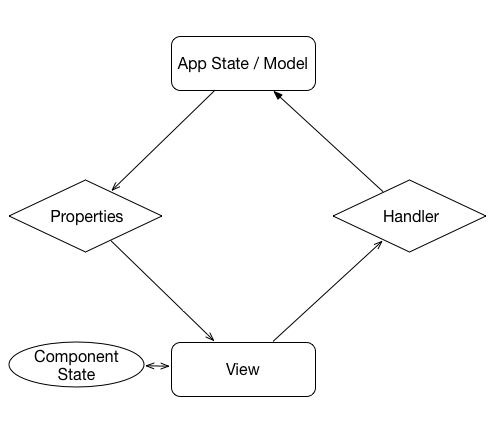
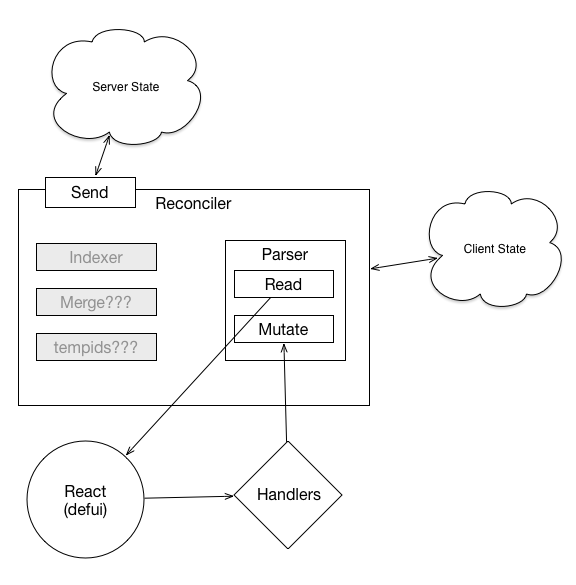
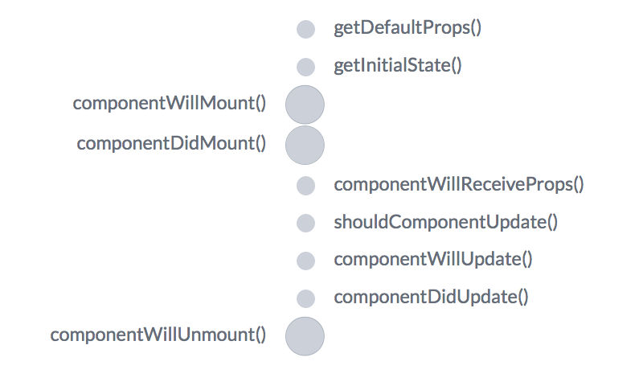

Model, View, Controller

ReactJS
Things to unlearn
- Om.Prev -- UNLEARN EVERYTHING
- Redux/Flux/etc... -- smart components a.k.a. containers
Om.Next
Om Component (Stateless)
(defui mycomponent
Object
(render [this]
(let [{:keys myprop1 myprop2} (om/props this)]
(dom/div #js {:className "myclass"
:style "text-align: left;"}
(dom/ul nil (dom/li myprop1)
(dom/li myprop2))))))
(def mycomponentf (om/factory mycomponent :keyfn :id
:validator my-validator))Stateless Om Component 2
(ns coffee-table.component.MobileSummaryList
(:require [om.next :as om :refer-macros [defui]]
[om.dom :as dom]
[coffee-table.component.MobileSummaryItem :as summary]))
(defui MobileSummaryList
Object
(render [this]
(let [widget summary/mobile-summary-item
visits (om/props this)]
(apply dom/div nil
(map widget visits)))))
(def summary-list
(om/factory MobileSummaryList))
Some additional protocols...
(defui ^:once MobileSummaryItem
static om/Ident
(ident [this {:keys [db/id]}] [:visits/by-id id])
static om/IQuery
(query [this] '[:db/id :visit/name :visit/date :visit/beverage-rating])
Object
(render [this]
(let [props (om/props this)
...
React lifecycle
Application State
(defonce app-state
{:app/editing false
:app/buffer {}
:app/mode :list}
:app/visits [{:visit/id 1
:visit/name "Hello World Café"
:visit/beverage-rating 3}
{:visit/id 2
:visit/name "Some other café"
:visit/beverage-rating 2}])
Application State Normalization
- Consolidates and de-duplicate items into internal-only hash tables in the application state
- Hash tables are determined by any Ident declarations found on components on load-times
- Enabled unless:
- You supply an atom to Om as the state
- You set the normalization flag to false when initializing the reconciler
Normalization in action
The following widget:
(defui ^:once MobileSummaryItem
static om/Ident
(ident [this {:keys [visits/id]}] [:visits/by-id id])
...
{:app/editing false
:app/buffer {}
:app/mode :list
:app/visits [[:visit/by-id 1] [:visit/by-id 2]]
:visits/by-id {1 {:visit/id 1
:visit/name "Hello World Café"
:visit/beverage-rating 3}
2 {:visit/id 2
:visit/name "Some other café"
:visit/beverage-rating 2}}
Parser
- Engine for getting/sending attributes
- Major source of complexity in Om.Next
- Can be explored well beyond scope of presentation
BUT!
- read and mutate functions have _same_ signature!
Reading values
(defmulti read om/dispatch)
(defmethod read :app/list-mode
[{:keys [state]} key params])
{:value {keys [:app/editing]
(let [st @state]
{:value (get st key)})}}
Mutating app state (Component)
(defn handle-select [this id]
(om/transact! this `[(visit/display {:id ~id}) :app/mode :app/buffer]))
(defui ^:once MobileSummaryItem
...
(render [this]
(let [props (om/props this)
{:keys [db/id] props}]
(dom nil
...
(dom/button #js {:onClick #(handle-select this id)})
...))))
Mutating app state (Parser)
(defmethod mutate 'app/list-mode
[{:keys [state]} _ _]
{:value {:keys [:app/editing :app/mode]}
:action (fn []
(let [st @state]
(swap! state assoc :app/editing false)
(swap! state assoc :app/mode :list)))})
Read + Mutate == Parser
(def parser (om/parser {:read read :mutate mutate}))
Putting it all together
(defonce reconciler (om/reconciler {:state state/app-state
:parser parser/parser}))
(om/add-root! reconciler App (gdom/getElement "app"))
ESCAPE WHILE YOU CAN
Server-side Om.Next
- Server-side read/mutate parsers
- surprise surprise, leverages Cognitect's "Transit" protocol
Client-side configuration (CLJS)
(ns coffee-table.core
(:require [ajax.core :refer [POST transit-request-format]]))
(defn send [query cb]
(POST "/query" {:params (:remote query)
:format (transit-request-format {
:writer (transit/writer :json transit-writers)})
:handler #(cb %)}))
(defonce reconciler (om/reconciler {:state state/app-state
:parser parser/parser
:send send}))
om.next server-side parsing
(ns coffee-table.parser
(:require [om.next.server :as om]))
(defmulti readf om/dispatch)
(defmethod readf :default
[_ _ _]
{:value :notfound})
(defmethod readf :app/visits
[{:keys [state]} key _]
(let [st @state
fn (fn [idx item]
(assoc item :db/id idx))]
{:value (into [] (map-indexed fn (:app/visits st)))}))
om.next.server + Compojure
(defn query
[{:keys [params body]}]
(let [query-env {:state state/app-state}
result ((om.next.server/parser
{:read parser/readf
:mutate parser/mutatef}) query-env body)]
{:status 200
:headers {"Content-Type" "application/transit+json"}
:body result}))
(def app
(-> handler
wrap-transit-body
wrap-transit-response
(wrap-resource "public")))